Digital Running Diary
Short-Form Content | Content Creation | Digital Storytelling
An ongoing self-initiated content project documenting my marathon training journey through TikTok. By combining authentic storytelling, consistent visual identity and platform-specific content, I explore how personal experiences can be transformed into engaging digital narratives that build community and audience engagement.
Objectives
1] Document the journey – Create an authentic visual diary from training to race day.
2] Develop storytelling – Use short-form video, pacing and editing to communicate experiences.
3] Build community – Create relatable content that encourages conversation with other runners.
4] Analyse performance – Use analytics to understand audience behaviour and improve content.
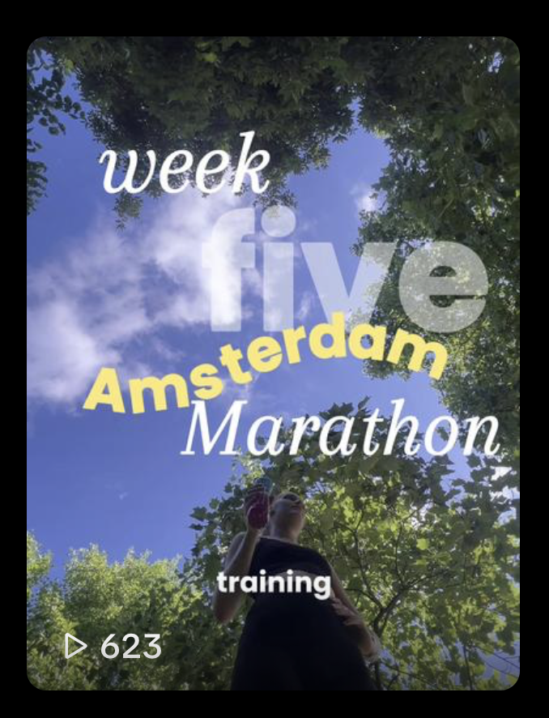
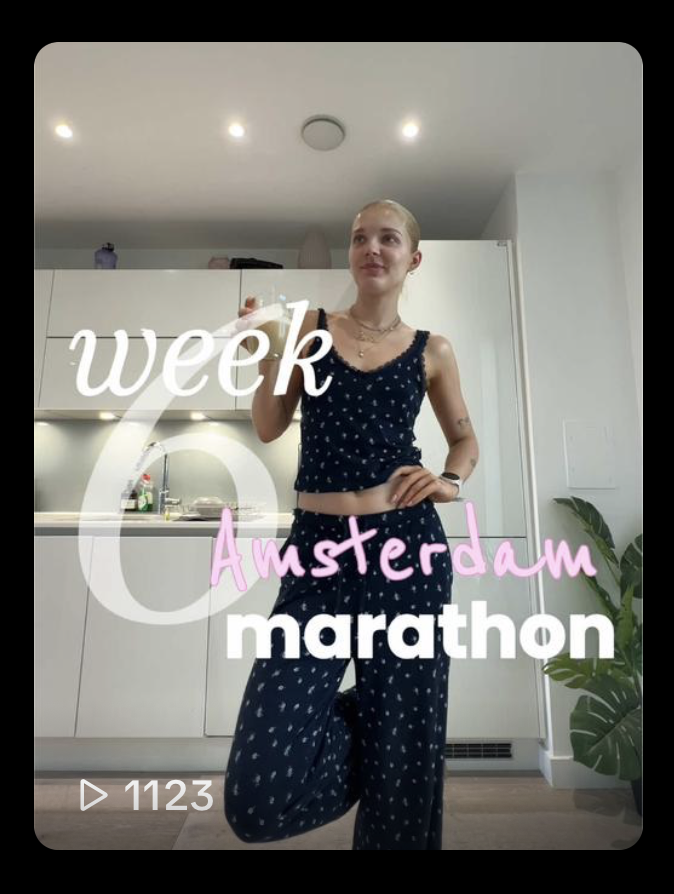
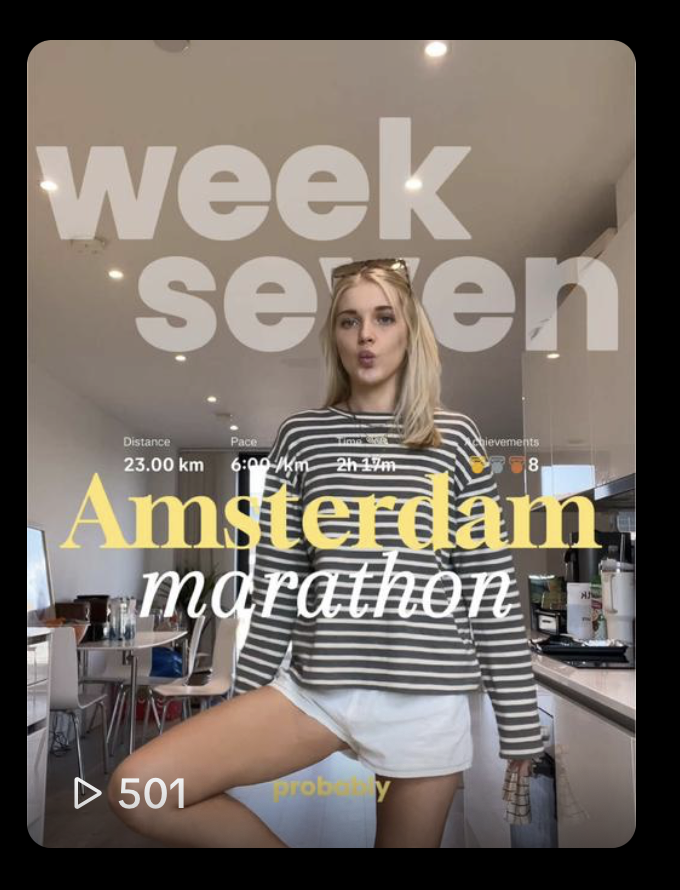
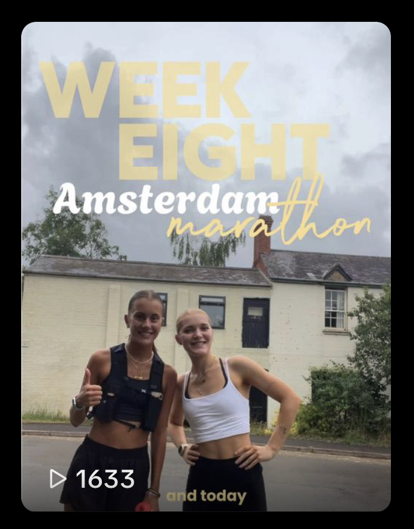
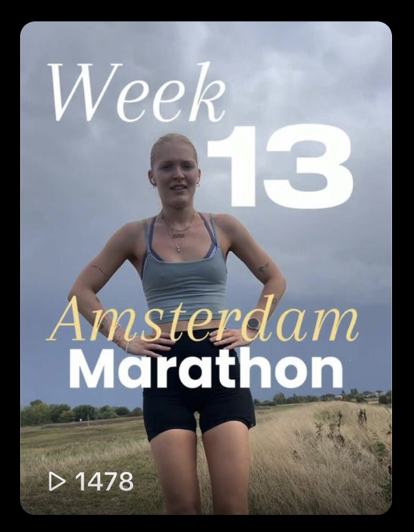
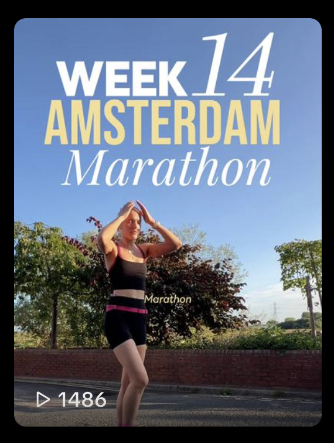
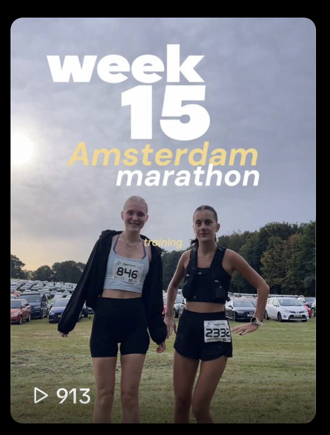
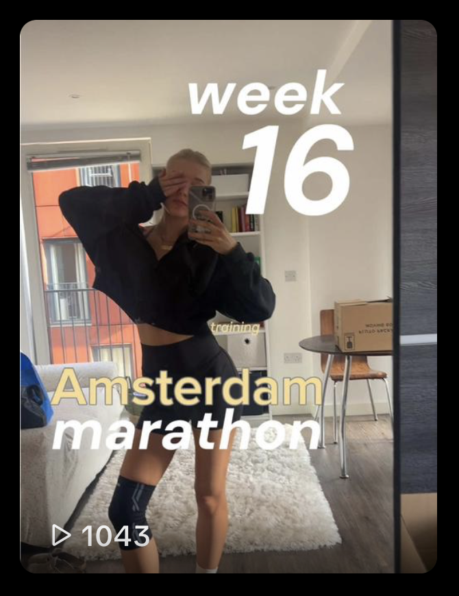
Visual Identity
I developed a consistent visual identity that carried across the entire project. Repeated design elements, editing styles and storytelling techniques helped strengthen audience recognition and create a unified digital presence.
KEY FOCUSES
Training Logs:
Regular updates documenting weekly milage, long runs, and personal milestones. Documenting my progress consistently and showing improvement over time.
Storytelling:
Using personal experiences to create relatable, emotionally engaging content that builds stronger audience connections.
Educational Content:
Sharing practical advice and lessons learnt to create useful resources and encouraging discussion.
Community Engagement:
Building conversation through comments and replies.
EDITING TECHNIQUES
Voice Over Videos:
Documentary style videos, voiceovers and chronological stroytelling to create an authentic feel.
Trend Adaptation:
Adapting popular tiktok editing styles and audio whilst still keeping a personal narrative.
Fast-Paced Montages:
Condensing long training sessions into short engaging videos through quick cuts and rhythmic editing
Text-Led Storytelling:
Using on-screen text to establish context quickly and help viewers engage with the story from the opening second.
TREND-LED CONTENT
Popular Editing Formats:
Adapting familiar TikTok editing formats, such as 'POV' videos, to communicate relatable experiences while maintaining my own storytelling style.
Trending Hook/Sound:
Incorporating trending sounds and attention-grabbing hooks increased discoverability while keeping the content relevant to current trends.
Real Time Content:
Creating content around key moments in the running calendar, such as the London Marathon ballot and Sydney Marathon announcements, allowed me to join wider community conversations. Posting these videos while interest was at its peak increased their relevance and encouraged higher engagement.
BEST PERFORMING CONTENT
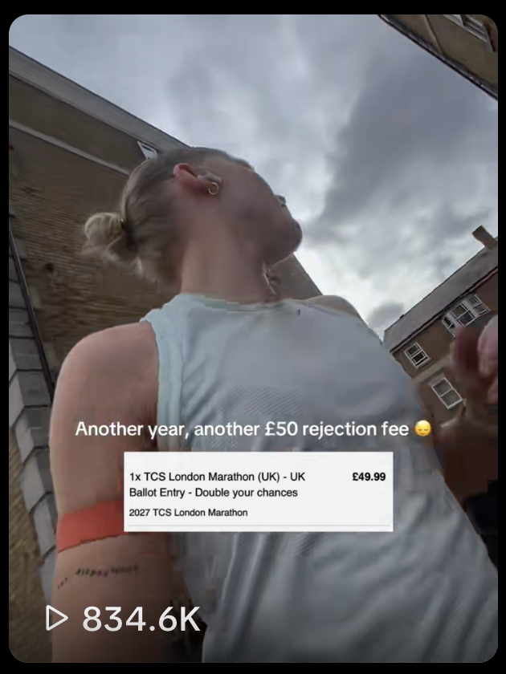
Objective: Relatable community content
Content Type: Sub 15 seconds, simple text-overlay
Why did it perform well? Timely content - posted on the day of the Marathon Ballot
Key Insight: Content tied to a specific, recurring calendr moment has the potential to travel beyond my follower base.
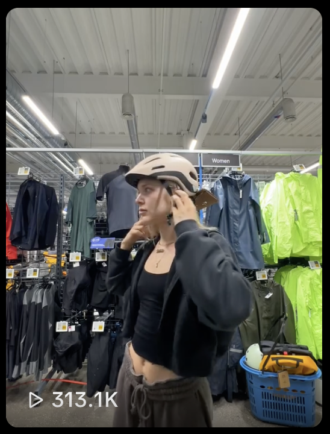
Objective: Reach a new audience.
Content Type: Storytime content / vlog style.
Why did it perform well? Driven by FYP, reaching new audiences.
Key Insight: Retention dropped in first second - hook not strong enough.
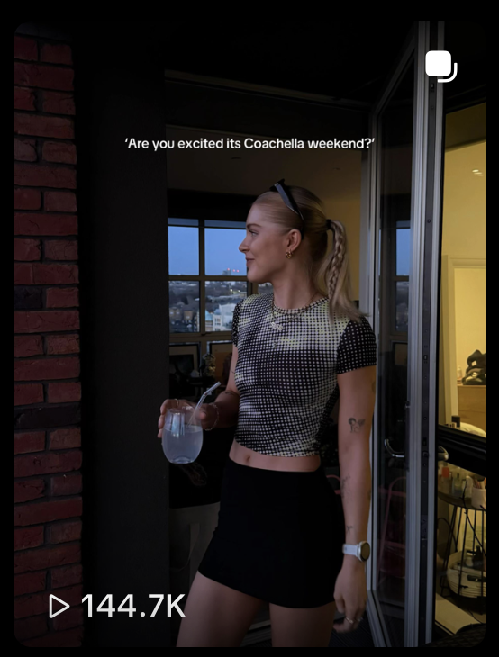
Objective: Reach a niche audience.
Content Type: Hashtag led photo-swipe.
Why did it perform well? Timely content - views peaked on day 1.
Key Insight: Using niche hashtags to reach those audiences.
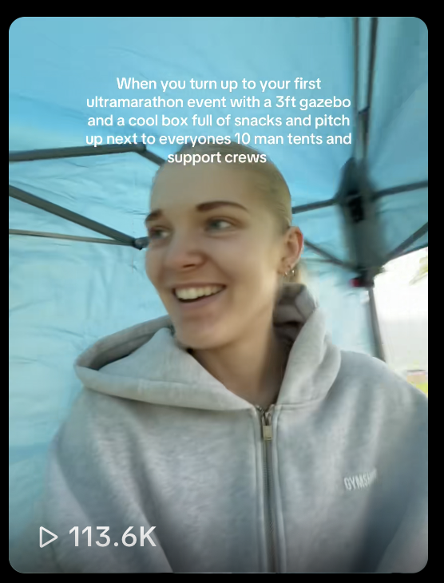
Objective: Use a trending sound in a suitable way for my audience.
Content Type: Trend-led content.
Why did it perform well? Trending sound with lots of text to increase watch time.
Key Insight: Using trending sounds to reach FYP.
AUDIENCE INSIGHTS
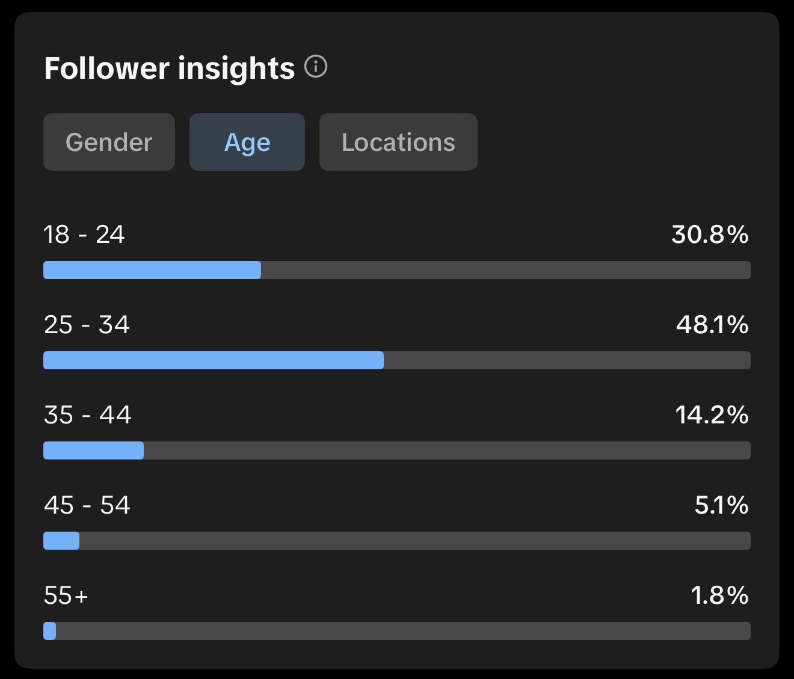
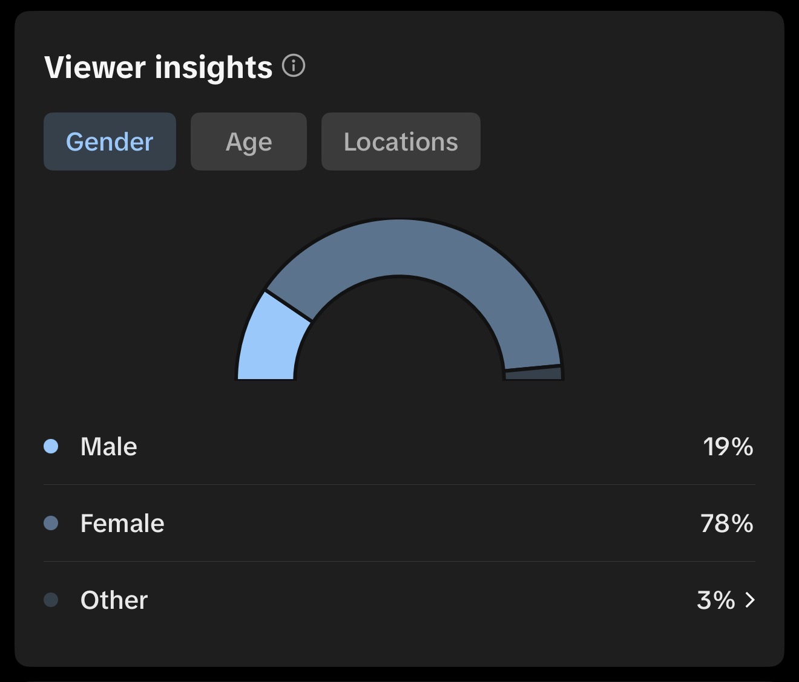
Audience Demographic:
Audience insights revealed that my account resonated primarily with women aged 25–34, understanding these demographics helped inform the tone, storytelling and content formats I used.
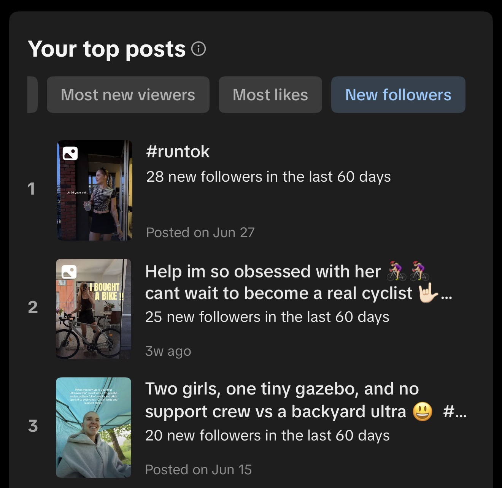
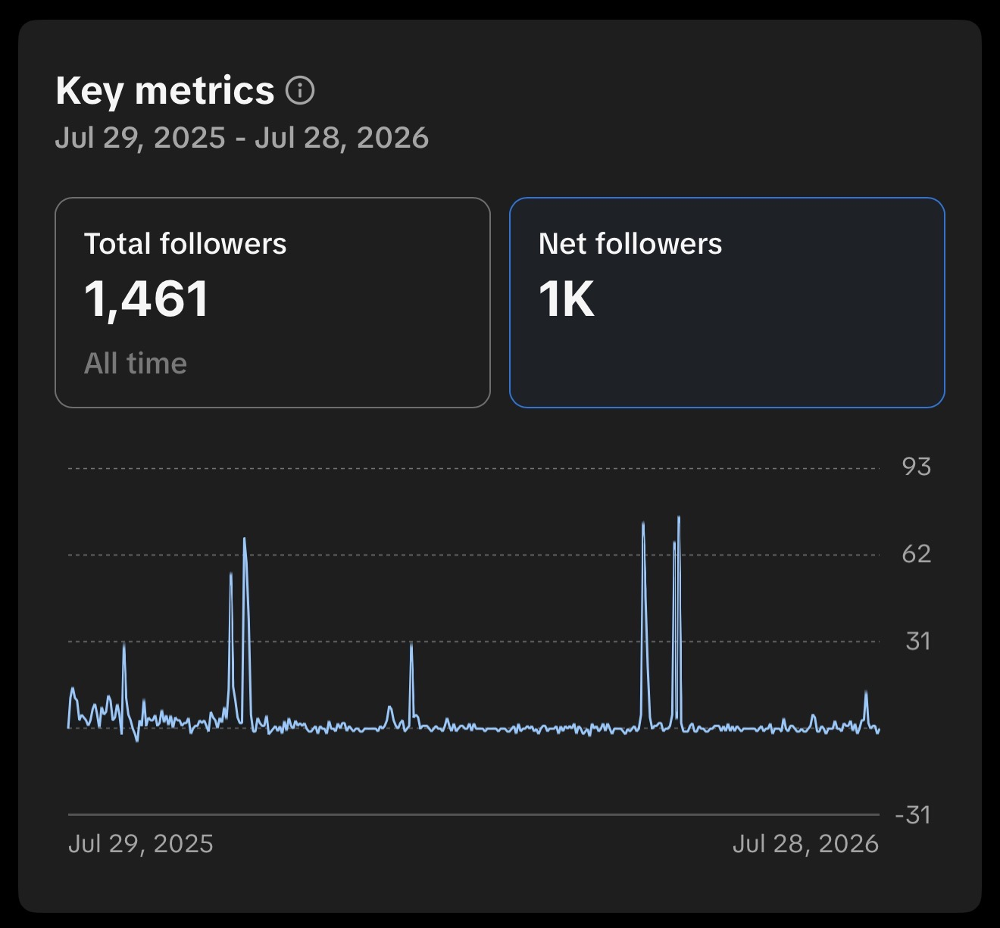
Follower Growth:
Noticeable spikes in follower growth coincided with key milestones and timely content, demonstrating the impact of event-led storytelling and consistent posting.